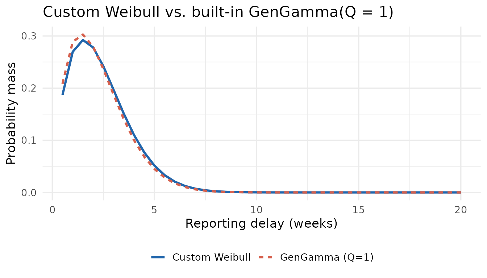
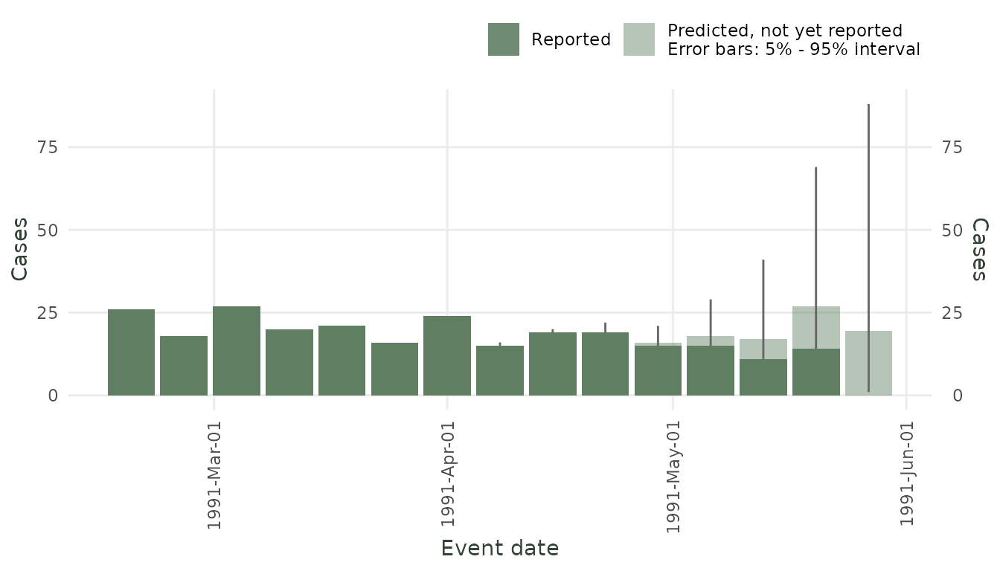
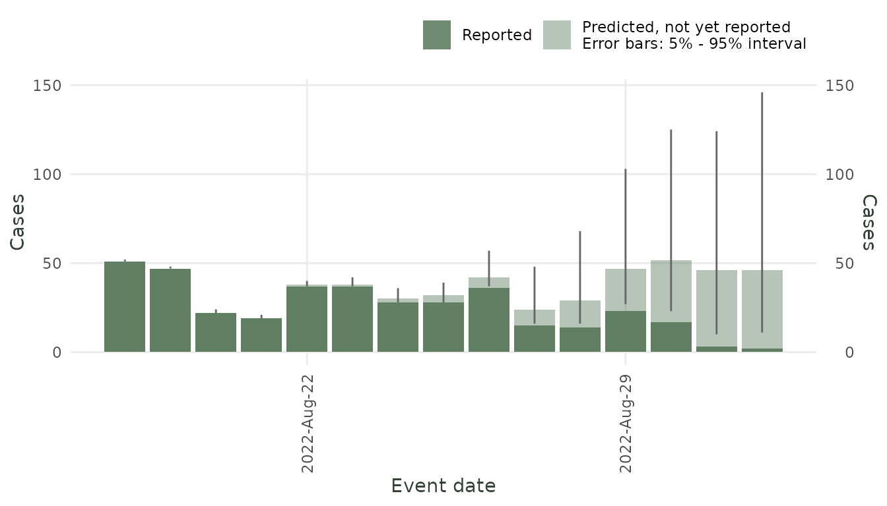
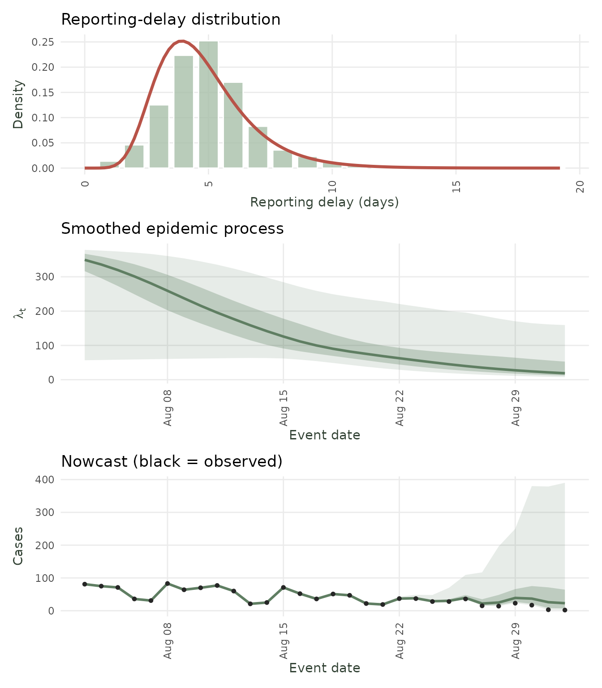

Custom Delays and Epidemic Processes
diseasenowcasting team
Source:vignettes/Custom_delays_and_processes.Rmd
Custom_delays_and_processes.Rmddiseasenowcasting is a model-agnostic nowcasting
framework. A nowcast here is built from three pieces:
A likelihood,
An epidemic process, and
A reporting-delay distribution.
You can either pick a built-in for the epidemic and the delay or supply your own.
This vignette shows how to extend the epidemic and delay processes to custom models via two examples based on a real dataset:
A custom delay distribution (Weibull), fit to weekly dengue surveillance (
tbl.now::denguedat); anda custom epidemic process (hand-written SIR model), fit to the 2022 mpox outbreak (
tbl.now::mpoxdat).
The one rule: RTMB
To fit, the package needs the gradient of the likelihood with respect to the parameters. It gets this automatically via automatic differentiation (AD) through the RTMB) package. If you are unfamiliar with it here are some basic rules:
Write your function in plain arithmetic. Use
+,-,*,/,exp,log,sqrt,abs,sum,cumsum,pnorm,pgamma, and fixed-lengthforloops (loops that depend on sample size or time but not on a parameter).Avoid conditioning on parameters Never use
if/ifelseon a parameter value norpmax/pminon parameters. There are always work around such as using(x + abs(x))/2forpmax(x, 0).Don’t use random draws nor external solvers (e.g. for differential equations or optimization).
deSolvecan be used via the additionalRTMBodelibrary.
Note Each extension has a validator (
validate_custom_delay(),validate_custom_epidemic()). It checks your function for possible errors. The validator is not perfect and might raise false-positive flags (i.e. functions that do work on RTMB might crash the validator). So if you know what you are doing feel free to ignore it.
1. Custom delay: Weibull
The data
denguedat is a weekly dengue line-list from Puerto Rico
(onset_week, report_week). We take one season
and build a tbl_now, which carries the two time indices the
nowcast needs:
#Get just one season for making the example fast
dengue_season <- denguedat |>
filter(report_week <= as.Date("1991-06-01") &
onset_week <= as.Date("1991-06-01"))
#Construct the tbl_now
dengue_tn <- tbl_now(dengue_season,
event_date = onset_week,
report_date = report_week,
data_type = "linelist",
verbose = FALSE)The custom part: a Weibull delay
You describe the delay through its cumulative
distribution function (CDF) F(d). Each piece is written
as a function of a parameter vector named theta that
returns a function of the delay d.
Note
thetarepresents a transformation of the parameters so that they are unconstrained (\theta \in \mathbb{R}^k. It might not be equal to the ‘usual’ parameters as we explain below.
| Argument | Meaning | Weibull form | Required? |
|---|---|---|---|
cdf(theta) |
returns function(d) = F(d) =
\Pr(\text{delay} \le d)
|
1 - \exp(-(d/\lambda)^k) | yes |
log_cdf(theta) |
returns function(d) = \log
F(d)
|
defaults to \log(\text{cdf}) | no |
log_survival(theta) |
returns function(d) = \log(1
- F(d))
|
-(d/\lambda)^k | no |
Only cdf is required; log_cdf and
log_survival default to the obvious transforms of
cdf. It is worth supplying log_survival and
log_cdf explicitly for numerical stability. For example,
the default log(1 - cdf) loses precision as F \to 1, whereas for the Weibull
log_survival = -(d/\lambda)^k is exact. We work on the
log scale (theta[1] = log k,
theta[2] = log lambda) so the optimizer is
unconstrained.
weibull_cdf <- function(theta) {
shape <- exp(theta[1]) # k > 0
scale <- exp(theta[2]) # lambda > 0
function(d) 1 - exp(-(d / scale)^shape)
}
weibull_log_survival <- function(theta) {
shape <- exp(theta[1]) # k > 0
scale <- exp(theta[2]) # lambda > 0
function(d) -(d / scale)^shape # exact log(1 - F), stable in the tail
}Pass them to custom_delay(). The arguments:
-
cdf(and optionallylog_cdf,log_survival) — the functions above. -
priors— a list with one entry per parameter, inthetaorder. Each entry is either a prior (a free parameter, estimated) or a single number (fixed). -
name,param_names,inits— labels and (unconstrained-scale) starting values.
weibull_delay <- custom_delay(
cdf = weibull_cdf,
log_survival = weibull_log_survival,
priors = list(normal_prior(0, 1), normal_prior(log(3), 1)),
name = "Weibull",
param_names = c("log_shape", "log_scale"),
inits = c(0, log(3))
)
validate_custom_delay(weibull_delay)Fit it (and a built-in to compare against)
The Generalized Gamma reduces exactly to a Weibull
when its shape parameter Q = 1, so
generalized_gamma_delay(Q = 1) is a perfect built-in
cross-check for our custom delay:
#Custom delay
nc_weibull <- nowcast(dengue_tn,
model(likelihood = nb_likelihood(),
epidemic = ar1_epidemic(),
delay = weibull_delay),
temporal_effects = "none")
#Using the Generalized Gamma from the package
nc_gengamma <- nowcast(dengue_tn,
model(likelihood = nb_likelihood(),
epidemic = ar1_epidemic(),
delay = generalized_gamma_delay(Q = 1)),
temporal_effects = "none")The two coincide confirming the custom delay matches a known distribution:
Show plotting code
delay_grid <- seq(0.5, 20, by = 0.5)
pmf <- function(shape, scale)
stats::pweibull(delay_grid + 0.5, shape, scale) -
stats::pweibull(pmax(0, delay_grid - 0.5), shape, scale)
#Get the fitgted parameyters
theta_w <- as.numeric(nc_weibull@fits[[1]]$parList$custom_delay_params)
mu_g <- nc_gengamma@fits[[1]]$reconstruct$delay_mu
sig_g <- nc_gengamma@fits[[1]]$reconstruct$delay_sigma
compare_df <- rbind(
data.frame(delay = delay_grid, p = pmf(exp(theta_w[1]), exp(theta_w[2])), model = "Custom Weibull"),
data.frame(delay = delay_grid, p = pmf(1 / sig_g, exp(mu_g)), model = "GenGamma (Q=1)")
)
ggplot(compare_df, aes(delay, p, colour = model, linetype = model)) +
geom_line(linewidth = 1.1) +
scale_colour_manual(values = c("Custom Weibull" = "#2166AC", "GenGamma (Q=1)" = "#D6604D")) +
labs(x = "Reporting delay (weeks)", y = "Probability mass",
title = "Custom Weibull vs. built-in GenGamma(Q = 1)", colour = NULL, linetype = NULL) +
theme_minimal(base_size = 13) + theme(legend.position = "bottom")
Fitted reporting-delay distribution: custom Weibull vs. the built-in GenGamma(Q=1), which is algebraically the same Weibull.
And the nowcast itself, using the custom delay:

Dengue nowcast with the custom Weibull delay (median + 50/90% intervals).
2. Custom epidemic: different SIR
A custom epidemic is just one function
intensity_fn(theta) that returns the log expected-incidence
matrix log_mean[n_time × n_strata]. How you generate it
(regression, random walk, ODE, …) is up to you.
The data
mpoxdat is daily count data from the 2022 US mpox
outbreak. We pool the race strata into one series and build a
tbl_now:
mpox_tn <- tbl_now(mpoxdat,
event_date = dx_date,
report_date = dx_report_date,
case_count = n,
data_type = "count-incidence",
verbose = FALSE,
now = as.Date("2022/09/01"))The SIR loop runs over every event-time, so we need
max_time (the number of event-times the model spans) before
writing the function. infer_max_time() reads it off the
data:
max_time <- infer_max_time(mpox_tn)The custom part: an SIR epidemic
This is the code that matters. A discrete-time SIR
with susceptibles (S) and infectious (I)
evolving on a daily basis. The modelled incidence is the new infections
beta·S·I/N. The parameters (R0, gamma, I0) are
again on the log scale (unconstrained).
sir_intensity_fn <- function(theta) {
#Assigning in a for loop a vector requires this:
`[<-` <- RTMB::ADoverload("[<-")
#We define R0, gamma and I0 as the parameters we are adjusting:
R0 <- exp(theta[1]) #Basic reproductive number
gamma <- exp(theta[2]) #1 / infectious rate
I0 <- exp(theta[3]) #Initial infected
#The total size of the population is constant:
N <- 1e5
#Initial values for S and I
S <- N - I0
I <- I0
#Beta (for force of infection)
beta <- R0 * gamma / N
#Empty vector where we'll store the incidence. Has to be instantiated in RTMB
incidence <- numeric(max_time)
#Only loops that don't depend on parameters are allowed.
#Here we loop through a constant (time) which is valid
for (t in seq_len(max_time)) {
new_inf <- beta * S * I
incidence[t] <- new_inf
#Rest of the model
S <- S - new_inf
I <- I + new_inf - gamma * I
}
# log of pmax(incidence, 0), AD-safe, guarding log(0):
matrix(log((incidence + abs(incidence)) * 0.5 + 1e-8), max_time, 1L)
}Wrap it in custom_epidemic() (same argument shape as
custom_delay()):
custom_sir_epidemic <- custom_epidemic(
intensity_fn = sir_intensity_fn,
priors = list(normal_prior(log(1.5), 0.4), # log R0
normal_prior(log(0.1), 0.3), # log gamma
normal_prior(log(5), 1.0)), # log I0
name = "SIR",
param_names = c("log_R0", "log_gamma", "log_I0"),
inits = c(log(1.5), log(0.1), log(5))
)
validate_custom_epidemic(custom_sir_epidemic)Fit it
nc_sir_custom <- nowcast(mpox_tn,
model(likelihood = nb_likelihood(),
epidemic = custom_sir_epidemic,
delay = lognormal_delay()),
temporal_effects = "none")And observe the results:
autoplot(nc_sir_custom)
mpox nowcast with the custom SIR epidemic (median + 50/90% intervals).
3. Summary: Tips for writing your own component
-
Parametrize on the unconstrained scale. Use
exp(theta[i])for positive quantities,plogis(theta[i])for probabilities. Give the initial valuesinitson that same scale. -
A custom epidemic represents the whole
log_mean. Include any baseline level. Use all covariates you need. Nothing (no intercept, no covariates) is added on top after you set it. -
Know
max_timefirst if your function loops over time.infer_max_time(tn)gives the number of event-times the model spans. -
Use
[<-to accumulate vectors Use`[<-` <- RTMB::ADoverload("[<-")only when a loop must fill a pre-allocated vector (e.g. an ODE). -
Guard
logof near-zero values Thelog((x + abs(x)) * 0.5 + 1e-8)we used is a numerically-safe way to calculate the maximum and avoidlog(0). -
Validate before fitting —
validate_custom_delay()/validate_custom_epidemic()help catch code errors early. -
Use other packages, the
RTMBodepackage offers an adaptive/stiff solver that plugs into RTMB. Might be helpful for more complicated models.
4. Advanced: A differential equations epidemic process
Here we write the epidemic as a continuous-time SIR ordinary differential equation and let a proper solver integrate it. The
RTMBodepackage provides adeSolve-styleode()that is differentiable throughRTMB(it supplies the adjoint), so there is no need to hand-roll an integrator such as Runge–Kutta.
The SIR system is
\frac{dS}{dt} = -\beta\,S\,I, \qquad \frac{dI}{dt} = \beta\,S\,I - \gamma\,I, \qquad \beta = \frac{R_0\,\gamma}{N},
and the daily incidence is the number of new infections within each
day. We obtain it by adding a cumulative-infection
compartment C with dC/dt = \beta\,S\,I; the per-day incidence is
then diff(C) across the day boundaries 0, 1, \dots, \texttt{max\_time}.
RTMBode is an optional dependency; install it from the
kaskr r-universe:
install.packages("RTMBode", repos = "https://kaskr.r-universe.dev")
sir_ode_fn <- function(theta) {
#We define R0, gamma and I0 as the parameters we are adjusting (log scale,
#so they are always positive):
R0 <- exp(theta[1]) #Basic reproductive number
gamma <- exp(theta[2]) #Recovery rate (1 / infectious period)
I0 <- exp(theta[3]) #Initial infected
#The total population is constant; beta is the transmission rate:
N <- 1e5
beta <- R0 * gamma / N
#The SIR right-hand side, deSolve-style: a function of (time, state, parms)
#returning the derivatives. We add a compartment C that ACCUMULATES new
#infections, so the daily incidence is simply diff(C).
sir_rhs <- function(time, state, parms) {
with(as.list(c(state, parms)), {
infection <- beta * S * I
list(c(-infection, # dS/dt
infection - gamma * I, # dI/dt
infection)) # dC/dt (cumulative infections)
})
}
#RTMBode::ode is a deSolve-compatible solver that is differentiable through
#RTMB (it supplies the adjoint), so we let it integrate the system instead of
#hand-rolling RK4. Solve at the day boundaries 0, 1, ..., max_time:
solution <- RTMBode::ode(
y = c(S = N - I0, I = I0, C = 0),
times = seq.int(0L, max_time),
func = sir_rhs,
parms = c(beta = beta, gamma = gamma)
)
incidence <- diff(solution[, "C"]) # new infections within each day
# log of pmax(incidence, 0), AD-safe, guarding log(0):
matrix(log((incidence + abs(incidence)) * 0.5 + 1e-8), max_time, 1L)
}The wrapping and fitting are exactly as before:
sir_ode_epidemic <- custom_epidemic(
intensity_fn = sir_ode_fn,
priors = list(normal_prior(log(1.5), 0.4),
normal_prior(log(0.1), 0.3),
normal_prior(log(5), 1.0)),
name = "SIR-ODE",
param_names = c("log_R0", "log_gamma", "log_I0"),
inits = c(log(1.5), log(0.1), log(5))
)
#Check the custom model
validate_custom_epidemic(sir_ode_epidemic)
#Do the nowcast
nc_ode <- nowcast(mpox_tn,
model(nb_likelihood(), sir_ode_epidemic, lognormal_delay()),
temporal_effects = "none")
nowcast_diagnostic(nc_ode)